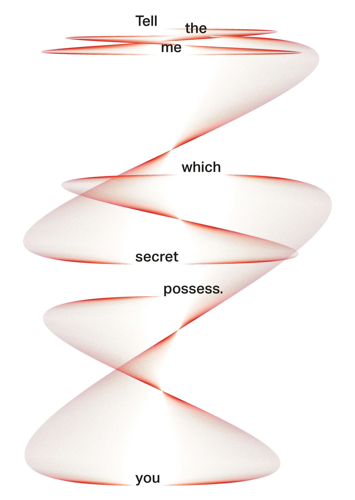
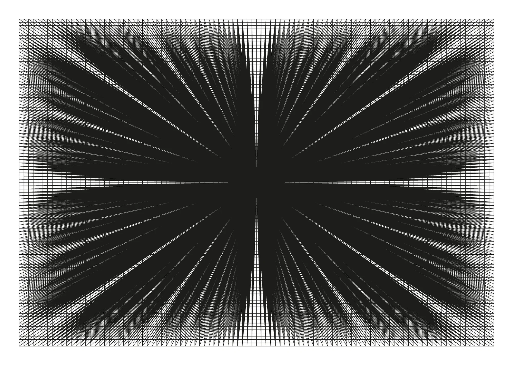
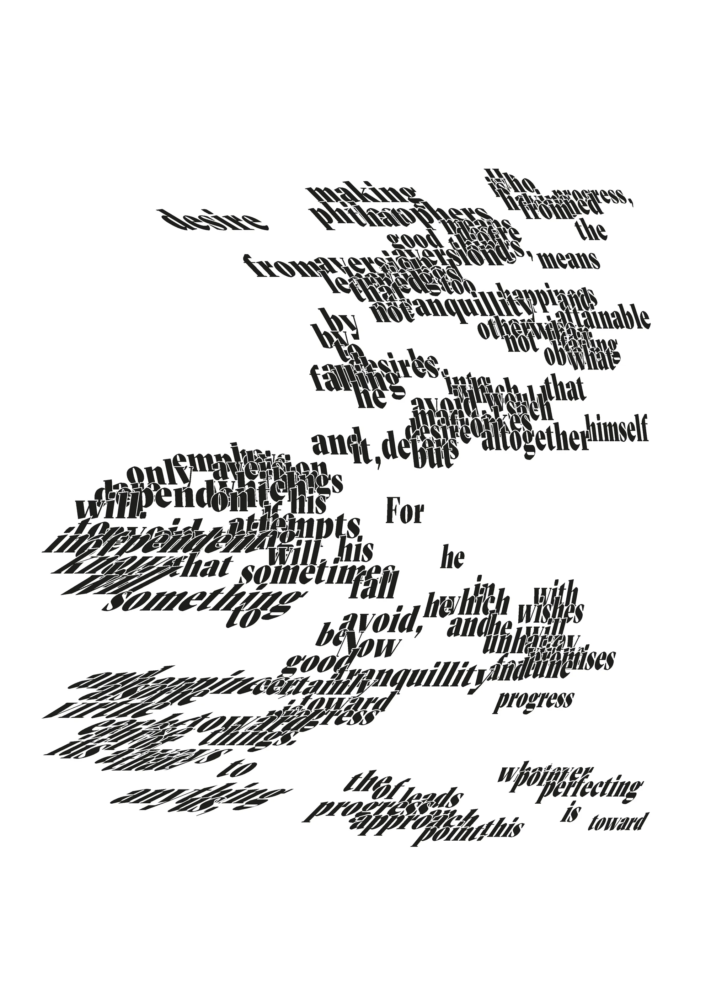
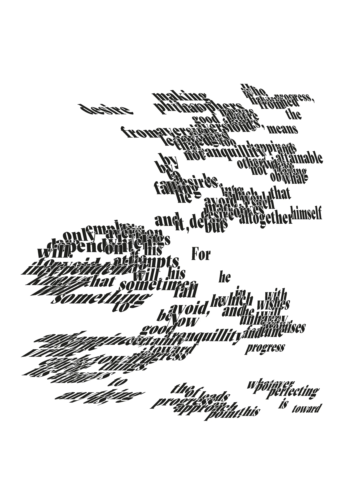
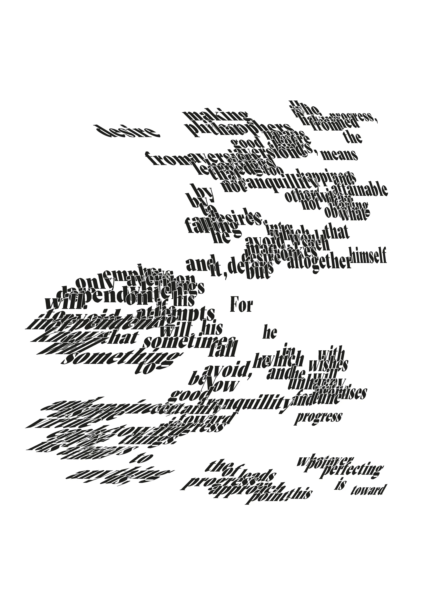

Computational Typography in InDesign
- My final major project at the London College of Communication was around exploring scripting inside of Adobe InDesign using a library called basil.js.
- While working on Modulo, my layered typeface, I realized how tedious and inefficient it was to manually overlay hundreds of individual text frames for my type tests. I understood that code could be used for creative purposes and that it was an incredible way to automate tasks and reduce errors.


 



